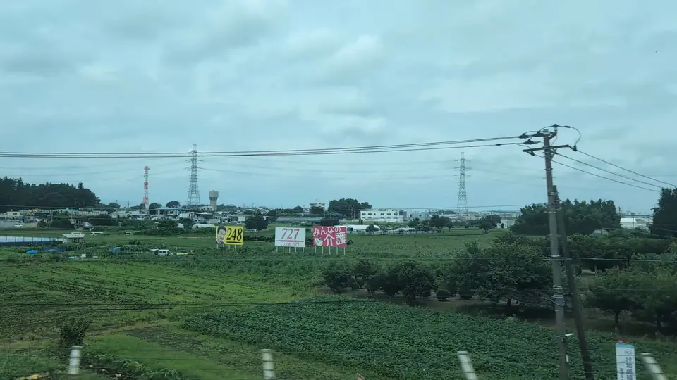
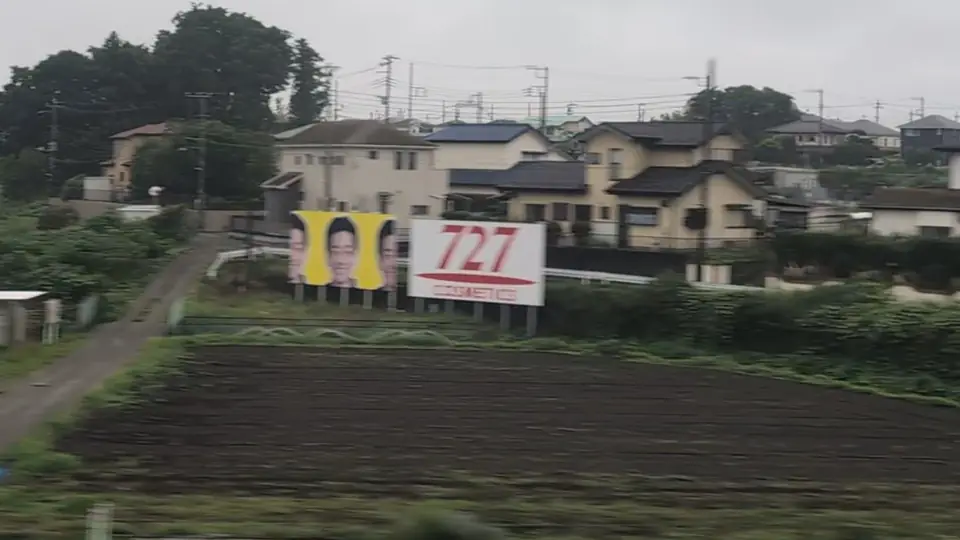
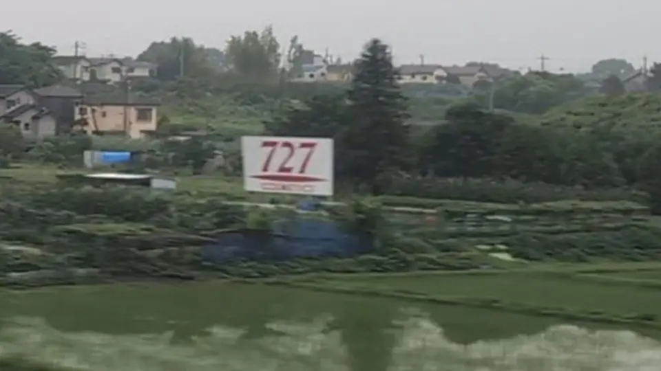

- Section
- Shin-Yokohama → Odawara, around Fujisawa
- Seat side
- Seats A and E
- Timing
- About 26 minutes after leaving Tokyo on a Nozomi train
- Photos
- 4 photos
How to find 727 and 248 Signs
Heading from Tokyo toward Shin-Osaka, start watching Seat E roughly eight minutes after Shin-Yokohama. Around Kuzuhara in Fujisawa, the white 727 billboard and yellow 248 billboard stand together in the fields; this is the representative point shown on the map. Farther toward Odawara, more 727 signs appear on Seat A around Yoda and beside the 'Who am I?' sign. Because 727 has multiple locations, the correct seat side depends on which sign you are looking for.
More: note: 727 signs from the Shinkansen (Japanese only)727 Cosmetics official site727 Cosmetics: Company history (Japanese only)Kinuta Dental: post about the 248 sign (Japanese only)Kinuta Dental: 248 means Nishi-Hachi (Japanese only)
If you are traveling from Tokyo toward Shin-Osaka, start watching the Seats A and E window as you approach Shin-Yokohama → Odawara, around Fujisawa. If you are traveling toward Tokyo, the order is reversed.
What do the 727 and 248 billboards mean?
727 is the sign of "Seven Two Seven" (727 COSMETICS), a cosmetics maker based in Osaka. Its official history records that the company was founded on July 27, 1945. The key thing to know is that 727 is salon-only: it is sold through registered hair salons with in-person advice, not through ordinary shops or drugstores. So the product is rarely seen around town, yet the signs repeatedly appear beside the Shinkansen. That contrast is why 727 has become such a talking point.
The design is deliberate, too: a huge "727" with a small "COSMETICS" underneath, made to be recognized in a split second from a fast-moving train. There are many of these signs along the Tokaido Shinkansen, so you meet the same sign again and again. It is not a headline view like Mt. Fuji, but for Japanese riders it is a familiar part of the journey — and for first-time visitors, "What is 727?" is often the first little mystery of the ride.
The yellow "248" sign beside it advertises Kinuta Dental in Nishi-Hachioji. The digits are read as "Nishi-Hachi," a shorthand for Nishi-Hachioji; the clinic's official account has confirmed that reading. Around Kuzuhara, the white 727 and yellow 248 signs sit together, making the pair look even more mysterious if you do not know what the numbers mean.
Location at a glance
Open mapSwitch between the spot and the Shinkansen viewpoint.
How to catch 727 and 248 Signs
1. Choose the window first
As you approach Shin-Yokohama → Odawara, around Fujisawa, start watching from Seats A and E. Use Live Guide while riding, or the map on this page before you board.
The clearest view lasts only one or two seconds. Let Live Guide warn you before you look up.
2. Highlights
This is not a headline landmark like Mt. Fuji or a major castle. It is the kind of small window view that feels rewarding precisely because you know where to look.
727 and 248 Signs in photos



 Related
Who am I? Sign
Related
Who am I? Sign
 Related
Odawara Castle
Related
Odawara Castle